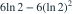
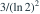
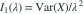
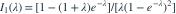

设  独立同分布，
独立同分布，![P_\lambda(X_i=k)=\lambda^k/[k!(e^\lambda-1)]](../practice/math/91d546e6f2984d8977f6.svg) ，
， ，
， 。记
。记  ，n是样本量。取n=3。在
，n是样本量。取n=3。在  处，整个样本对λ的Fisher信息
处，整个样本对λ的Fisher信息  为？
为？
独立同分布，，，。记 ，n是样本量。取n=3。在 处，整个样本对λ的Fisher信息 为？- A

- B

- C
- D
我已思考，展开答案与解析
正确答案：C
- 单个观测的得分为 ，因此

。 - 由级数求得 ，。
- 所以

。在λ=ln2时，，单个信息为 。 - 独立样本的信息相加，乘3得 。
易错提醒普通泊松单个信息1/λ不能直接搬来；计算Fisher信息时应明确参数是λ还是lnλ。
零截断泊松 · 回忆进阶重建 · 原创Fisher信息变式；独立求导与级数验证
根据考后回忆原创重建，非已核实考试原题；模型条件与数字已明确补全。
查看参考来源